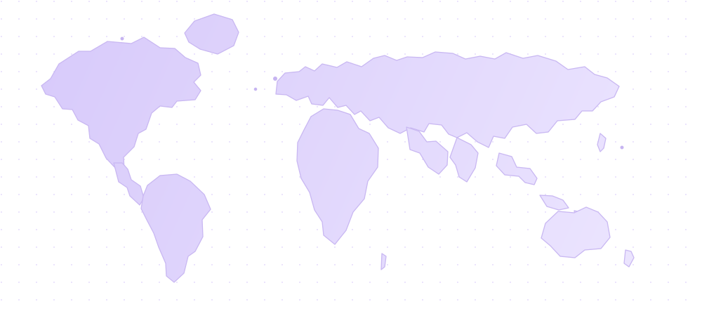

« Que dois-je répondre à mon client ? »
Retrouver le contexte, le dernier événement et un délai crédible sans courir après l’information.
Un délai qui change, une pièce bloquée, une équipe qui attend : YaraLink vous aide à voir l’écart, à coordonner la suite et à informer votre client au bon moment.

Lorsque l’envoi compte pour votre client, un simple statut « en transit » ne suffit plus à piloter la suite.
Retrouver le contexte, le dernier événement et un délai crédible sans courir après l’information.
Identifier le bon interlocuteur et coordonner l’action avant que l’attente ne s’allonge.
Voir les écarts récurrents et comprendre ce qu’ils coûtent en temps et en confiance.
Suivez un scénario concret : une pièce de rechange destinée à une cuisine professionnelle aux États-Unis. Chaque étape répond à une question que se pose votre équipe.
« Une pièce doit remettre une installation en service. Je garde le besoin client en vue. »
Votre client attend de pouvoir planifier son intervention. Vous avez besoin d’une date et d’un suivi fiables.
Ce qui compte : connaître l’enjeu derrière le colis.La valeur se mesure dans votre quotidien : une équipe qui sait quoi faire et un client qui n’attend pas une réponse dans le vide.
Les informations de transport sont réunies pour éviter de reconstituer l’histoire d’un envoi à chaque incident.
Vous partagez un état compréhensible, un nouveau délai et les prochaines étapes lorsque la situation change.
La confirmation de réception clôt le parcours et permet à vos équipes de reprendre la main sur la suite.
Les commandes, les événements de transport et les échanges avec vos clients vivent souvent dans des outils différents. YaraLink relie ces informations pour rendre les écarts visibles et faciliter la coordination.
Explorer les intégrationsNous partirons de vos flux, de vos outils et des questions que vos clients vous posent vraiment.